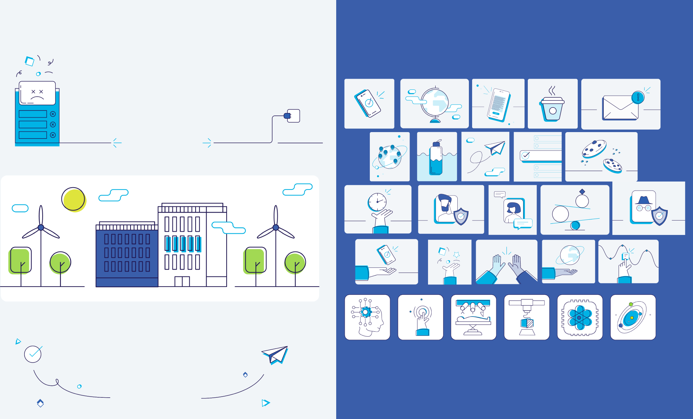
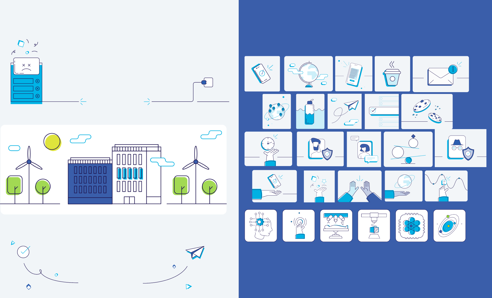

Graphic design @ ebankIT
Developed a cohesive suite of visual assets to strengthen eBankIT’s brand identity across multiple channels. This included the design of logos, custom iconography, one-pagers, and engaging social media content. Each piece was crafted to align with the company’s fintech vision, ensuring clarity, consistency, and visual impact in both internal and external communications.
 
